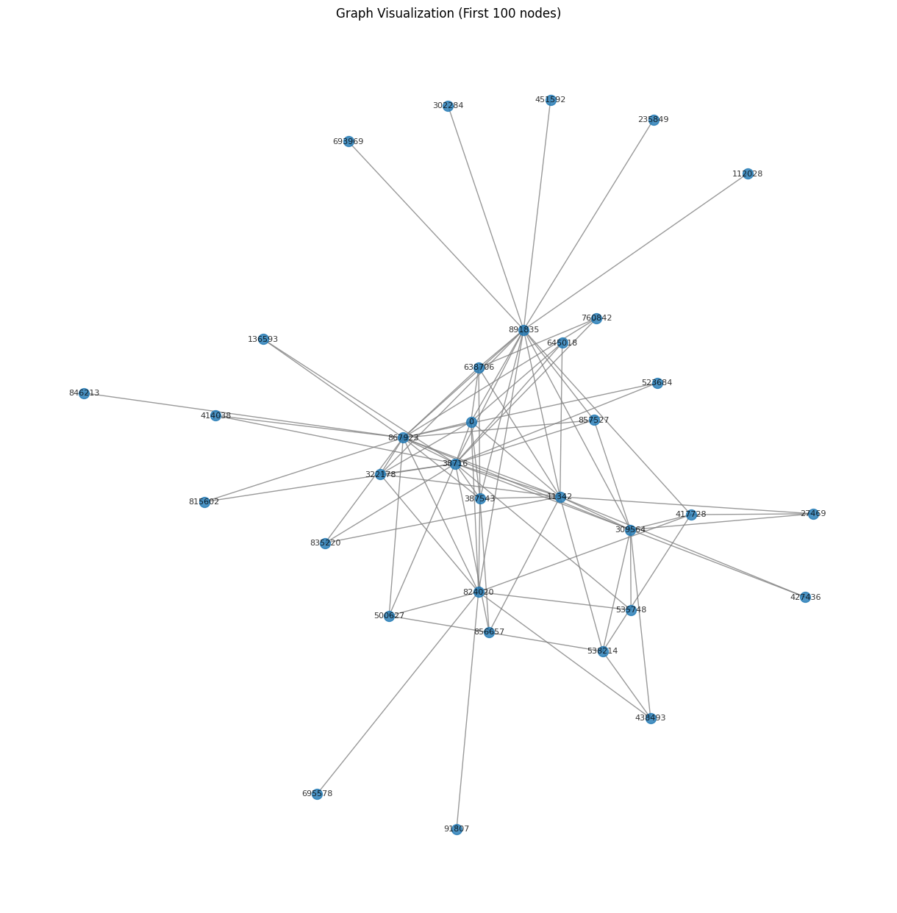

Page Rank#
import pandas as pd
# Load the data, skipping the first 4 metadata rows and using tab as delimiter
df = pd.read_csv('/content/web-Google_10k.txt', sep='\t', skiprows=4, header=None, names=['FromNodeId', 'ToNodeId'])
# Display the first few rows to verify the data loading
display(df.head())
# Save the selected columns to a new CSV file
df[['FromNodeId', 'ToNodeId']].to_csv('graph_data.csv', index=False)
print("Data dari 'FromNodeId' dan 'ToNodeId' telah disimpan ke 'graph_data.csv'")
---------------------------------------------------------------------------
FileNotFoundError Traceback (most recent call last)
Cell In[1], line 4
1 import pandas as pd
3 # Load the data, skipping the first 4 metadata rows and using tab as delimiter
----> 4 df = pd.read_csv('/content/web-Google_10k.txt', sep='\t', skiprows=4, header=None, names=['FromNodeId', 'ToNodeId'])
6 # Display the first few rows to verify the data loading
7 display(df.head())
File ~/.local/lib/python3.12/site-packages/pandas/io/parsers/readers.py:1026, in read_csv(filepath_or_buffer, sep, delimiter, header, names, index_col, usecols, dtype, engine, converters, true_values, false_values, skipinitialspace, skiprows, skipfooter, nrows, na_values, keep_default_na, na_filter, verbose, skip_blank_lines, parse_dates, infer_datetime_format, keep_date_col, date_parser, date_format, dayfirst, cache_dates, iterator, chunksize, compression, thousands, decimal, lineterminator, quotechar, quoting, doublequote, escapechar, comment, encoding, encoding_errors, dialect, on_bad_lines, delim_whitespace, low_memory, memory_map, float_precision, storage_options, dtype_backend)
1013 kwds_defaults = _refine_defaults_read(
1014 dialect,
1015 delimiter,
(...) 1022 dtype_backend=dtype_backend,
1023 )
1024 kwds.update(kwds_defaults)
-> 1026 return _read(filepath_or_buffer, kwds)
File ~/.local/lib/python3.12/site-packages/pandas/io/parsers/readers.py:620, in _read(filepath_or_buffer, kwds)
617 _validate_names(kwds.get("names", None))
619 # Create the parser.
--> 620 parser = TextFileReader(filepath_or_buffer, **kwds)
622 if chunksize or iterator:
623 return parser
File ~/.local/lib/python3.12/site-packages/pandas/io/parsers/readers.py:1620, in TextFileReader.__init__(self, f, engine, **kwds)
1617 self.options["has_index_names"] = kwds["has_index_names"]
1619 self.handles: IOHandles | None = None
-> 1620 self._engine = self._make_engine(f, self.engine)
File ~/.local/lib/python3.12/site-packages/pandas/io/parsers/readers.py:1880, in TextFileReader._make_engine(self, f, engine)
1878 if "b" not in mode:
1879 mode += "b"
-> 1880 self.handles = get_handle(
1881 f,
1882 mode,
1883 encoding=self.options.get("encoding", None),
1884 compression=self.options.get("compression", None),
1885 memory_map=self.options.get("memory_map", False),
1886 is_text=is_text,
1887 errors=self.options.get("encoding_errors", "strict"),
1888 storage_options=self.options.get("storage_options", None),
1889 )
1890 assert self.handles is not None
1891 f = self.handles.handle
File ~/.local/lib/python3.12/site-packages/pandas/io/common.py:873, in get_handle(path_or_buf, mode, encoding, compression, memory_map, is_text, errors, storage_options)
868 elif isinstance(handle, str):
869 # Check whether the filename is to be opened in binary mode.
870 # Binary mode does not support 'encoding' and 'newline'.
871 if ioargs.encoding and "b" not in ioargs.mode:
872 # Encoding
--> 873 handle = open(
874 handle,
875 ioargs.mode,
876 encoding=ioargs.encoding,
877 errors=errors,
878 newline="",
879 )
880 else:
881 # Binary mode
882 handle = open(handle, ioargs.mode)
FileNotFoundError: [Errno 2] No such file or directory: '/content/web-Google_10k.txt'
!pip install networkx matplotlib
Requirement already satisfied: networkx in /usr/local/lib/python3.12/dist-packages (3.5)
Requirement already satisfied: matplotlib in /usr/local/lib/python3.12/dist-packages (3.10.0)
Requirement already satisfied: contourpy>=1.0.1 in /usr/local/lib/python3.12/dist-packages (from matplotlib) (1.3.3)
Requirement already satisfied: cycler>=0.10 in /usr/local/lib/python3.12/dist-packages (from matplotlib) (0.12.1)
Requirement already satisfied: fonttools>=4.22.0 in /usr/local/lib/python3.12/dist-packages (from matplotlib) (4.60.1)
Requirement already satisfied: kiwisolver>=1.3.1 in /usr/local/lib/python3.12/dist-packages (from matplotlib) (1.4.9)
Requirement already satisfied: numpy>=1.23 in /usr/local/lib/python3.12/dist-packages (from matplotlib) (2.0.2)
Requirement already satisfied: packaging>=20.0 in /usr/local/lib/python3.12/dist-packages (from matplotlib) (25.0)
Requirement already satisfied: pillow>=8 in /usr/local/lib/python3.12/dist-packages (from matplotlib) (11.3.0)
Requirement already satisfied: pyparsing>=2.3.1 in /usr/local/lib/python3.12/dist-packages (from matplotlib) (3.2.5)
Requirement already satisfied: python-dateutil>=2.7 in /usr/local/lib/python3.12/dist-packages (from matplotlib) (2.9.0.post0)
Requirement already satisfied: six>=1.5 in /usr/local/lib/python3.12/dist-packages (from python-dateutil>=2.7->matplotlib) (1.17.0)
import networkx as nx
import matplotlib.pyplot as plt
import pandas as pd
# Load the graph data from the CSV file
df_graph = pd.read_csv('graph_data.csv')
# Select the top 50 rows to get a smaller subset for visualization
df_subset = df_graph.head(100)
# Create a graph object from the subset
G_subset = nx.from_pandas_edgelist(df_subset, 'FromNodeId', 'ToNodeId')
# Draw the graph
plt.figure(figsize=(12, 12)) # Increased figure size for better visibility
nx.draw(G_subset, with_labels=True, node_size=100, font_size=8, alpha=0.8, edge_color='gray') # Adjusted node size and font size
plt.title("Graph Visualization (First 100 nodes)")
plt.show()

import numpy as np
import pandas as pd
import networkx as nx
import time
def pagerank(adj_matrix, d=0.85, max_iter=100, tol=1e-6):
"""
Hitung PageRank dari matriks adjacency.
Parameters:
adj_matrix : array-like, shape (n, n)
Matriks adjacency (1 jika ada link i -> j)
d : float
Damping factor (default: 0.85)
max_iter : int
Maksimum iterasi
tol : float
Toleransi konvergensi
Returns:
r : ndarray, shape (n,)
Vektor PageRank
"""
adj = np.array(adj_matrix, dtype=float)
n = adj.shape[0]
# Tangani dangling nodes (baris dengan jumlah 0)
out_degree = np.sum(adj, axis=1)
for i in range(n):
if out_degree[i] == 0:
adj[i, :] = 1.0
# Normalisasi baris → jadi matriks transisi (baris jumlah = 1)
# TAPI: PageRank asli menggunakan TRANSPOSE → aliran masuk
# Jadi kita transpos untuk membuat kolom = out-link
M = adj / np.sum(adj, axis=1, keepdims=True)
M = M.T
# Inisialisasi
r = np.ones(n) / n
teleport = (1 - d) / n
for i in range(max_iter):
r_new = d * M @ r + teleport
diff = np.linalg.norm(r_new - r, 1)
# Optional: Print progress
# print(f"Iteration {i+1}, Diff: {diff:.6f}")
if diff < tol:
# print(f"Convergence reached at iteration {i+1}")
break
r = r_new
# Optional: Print if max iterations reached without convergence
# if i == max_iter - 1:
# print("Warning: Max iterations reached without convergence.")
return r
df_graph = pd.read_csv('graph_data.csv')
df_subset = df_graph.head(100)
G_subset = nx.from_pandas_edgelist(df_subset, 'FromNodeId', 'ToNodeId', create_using=nx.DiGraph())
nodes_subset = list(G_subset.nodes())
n_subset = len(nodes_subset)
adj_matrix_subset = nx.adjacency_matrix(G_subset, nodelist=nodes_subset).todense()
start_time = time.time()
print(f"Calculating PageRank for {n_subset} nodes...")
pr_subset = pagerank(adj_matrix_subset)
end_time = time.time()
duration = end_time - start_time
pr_scores_subset = dict(zip(nodes_subset, pr_subset))
print(f"PageRank calculation completed in {duration:.2f} seconds")
print("\nPageRank for the 50 nodes:")
for node, score in pr_scores_subset.items():
print(f"Node {node}: {score:.6f}")
Calculating PageRank for 34 nodes...
PageRank calculation completed in 0.00 seconds
PageRank for the 50 nodes:
Node 0: 0.065854
Node 11342: 0.056371
Node 824020: 0.031902
Node 867923: 0.058141
Node 891835: 0.057382
Node 27469: 0.022978
Node 38716: 0.026026
Node 309564: 0.021330
Node 322178: 0.025097
Node 387543: 0.025097
Node 427436: 0.022978
Node 538214: 0.022978
Node 638706: 0.024378
Node 645018: 0.022631
Node 835220: 0.026750
Node 856657: 0.025679
Node 91807: 0.020373
Node 417728: 0.052941
Node 438493: 0.028532
Node 500627: 0.032303
Node 535748: 0.023322
Node 695578: 0.020373
Node 136593: 0.023327
Node 414038: 0.023327
Node 523684: 0.023327
Node 760842: 0.027471
Node 815602: 0.023327
Node 846213: 0.022026
Node 857527: 0.029853
Node 112028: 0.022785
Node 235849: 0.022785
Node 302284: 0.022785
Node 451592: 0.022785
Node 693969: 0.022785
# Keluarkan node node yang terhubung
print("Connections for each node in the 100-node graph subset:")
for node in G_subset.nodes():
neighbors = list(G_subset.neighbors(node))
if neighbors:
print(f"Node {node} is connected to: {neighbors}")
else:
print(f"Node {node} has no outgoing connections in this subset.")
Connections for each node in the 100-node graph subset:
Node 0 is connected to: [11342, 824020, 867923, 891835, 38716, 322178, 387543, 638706, 645018]
Node 11342 is connected to: [0, 27469, 38716, 309564, 322178, 387543, 427436, 538214, 638706, 645018, 835220, 856657, 867923, 891835]
Node 824020 is connected to: [0, 91807, 322178, 387543, 417728, 438493, 500627, 535748, 695578, 867923, 891835]
Node 867923 is connected to: [0, 11342, 824020, 136593, 414038, 500627, 523684, 760842, 815602, 835220, 846213, 857527, 891835, 38716, 309564, 322178, 387543, 638706]
Node 891835 is connected to: [0, 11342, 824020, 867923, 112028, 235849, 302284, 417728, 451592, 693969, 857527, 38716, 309564, 322178, 387543, 638706]
Node 27469 is connected to: [11342, 417728, 309564]
Node 38716 is connected to: [11342, 0, 136593, 322178, 387543, 414038, 500627, 523684, 535748, 645018, 760842, 815602, 835220, 856657, 857527, 867923, 891835, 309564]
Node 309564 is connected to: [11342, 27469, 38716, 417728, 427436, 438493, 535748, 538214, 857527, 867923, 891835]
Node 322178 is connected to: [11342, 824020, 38716, 0, 867923, 891835]
Node 387543 is connected to: [11342, 824020, 38716, 0, 638706, 856657, 867923, 891835]
Node 427436 is connected to: [11342, 309564]
Node 538214 is connected to: [11342, 309564, 417728, 438493, 500627]
Node 638706 is connected to: [11342, 387543, 0, 760842, 867923, 891835]
Node 645018 is connected to: [11342, 38716, 0]
Node 835220 is connected to: [11342, 867923, 38716]
Node 856657 is connected to: [11342, 38716, 387543]
Node 91807 is connected to: [824020]
Node 417728 is connected to: [824020, 891835, 27469, 309564, 538214]
Node 438493 is connected to: [824020, 309564, 538214]
Node 500627 is connected to: [824020, 867923, 38716, 538214]
Node 535748 is connected to: [824020, 38716, 309564]
Node 695578 is connected to: [824020]
Node 136593 is connected to: [867923, 38716]
Node 414038 is connected to: [867923, 38716]
Node 523684 is connected to: [867923, 38716]
Node 760842 is connected to: [867923, 38716, 638706]
Node 815602 is connected to: [867923, 38716]
Node 846213 is connected to: [867923]
Node 857527 is connected to: [867923, 891835, 38716, 309564]
Node 112028 is connected to: [891835]
Node 235849 is connected to: [891835]
Node 302284 is connected to: [891835]
Node 451592 is connected to: [891835]
Node 693969 is connected to: [891835]